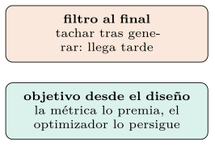
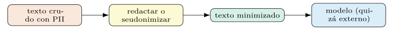
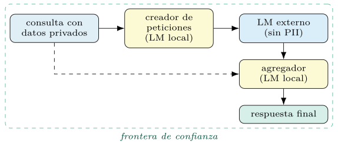
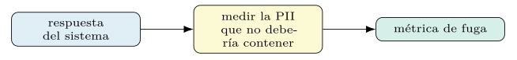
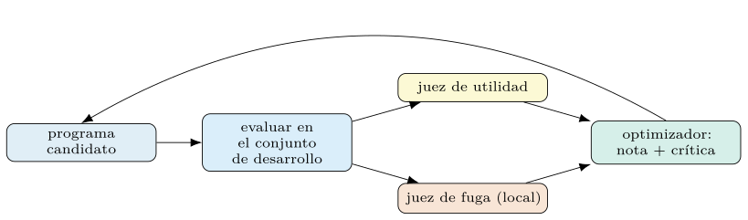
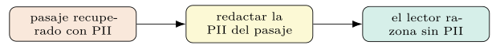
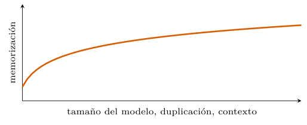
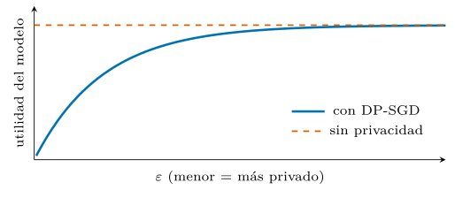
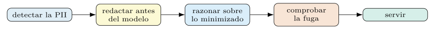
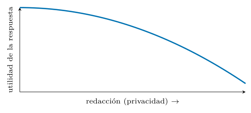

Capítulo 9. DSPy para privacidad: detección, minimización y no fuga de datos
La privacidad es otra frontera, no un epílogo de la seguridad. La seguridad pregunta si algo es un ataque; la privacidad, si algo expone a alguien. El aparato es el mismo —firmas, módulos, optimización contra una métrica (capítulos 2 y 6)—, pero la métrica cambia: ya no mide solo el acierto, sino cuánto revela una salida sobre las personas que aparecen en los datos. Este capítulo lleva la disciplina del libro a ese objetivo con el mismo método de declarar, medir y optimizar: primero el modelo de amenaza —quién puede aprender qué, desde dónde—, después las piezas defensivas —detección de PII, minimización, delegación entre un modelo local y otro externo—, luego la métrica de fuga y su optimización, y al final los frentes que ninguna redacción resuelve: la memorización de los modelos, la privacidad diferencial, el marco legal y los compromisos que conviene declarar en vez de esconder.
Privacidad como objetivo, no como añadido
Tratar la privacidad como un filtro que se añade al final —tachar datos tras generar la respuesta— llega tarde y protege mal. La alternativa es hacerla un objetivo del sistema desde el diseño: una propiedad que la métrica premia y el optimizador persigue, igual que la calidad. Así la privacidad deja de ser un parche y pasa a estar integrada en el programa compilado, medible y sujeta al mismo rigor que el resto del libro. La figura 9.1 opone las dos posturas.

Dos preguntas distintas sobre el mismo texto.
El clasificador del capítulo 3 pregunta si una alerta denota un ataque; el sistema de este capítulo pregunta si una respuesta expone a una persona. La diferencia no es cosmética. La seguridad defiende al sistema de sus entradas; la privacidad defiende a los sujetos de los datos frente a las salidas —y frente al propio sistema—. Un programa puede ser impecable en lo primero y desastroso en lo segundo: un asistente que resume tiques de soporte sin fallo alguno, pero cita nombre y dolencia del cliente en cada resumen. La teoría de la integridad contextual (contextual integrity) da el lenguaje preciso para esa segunda pregunta: la privacidad no consiste en ocultarlo todo, sino en que la información fluya conforme a las normas del contexto en que se recogió (Nissenbaum 2004). El diagnóstico puede circular del paciente al médico, y no del paciente al asegurador; la dirección de un cliente puede ir al transportista, y no al resto de destinatarios de un hilo. Esa vara contextual se puede evaluar: el banco de pruebas ConfAIde somete a los modelos a escenarios de información compartida entre varias partes y mide si respetan quién puede saber qué, y encuentra fugas de secretos incluso en los modelos de mayor capacidad —GPT-4 revelaba información privada en el 39 % de los contextos en que un humano no lo haría— (Mireshghallah et al. 2024). La lección de diseño es directa: la firma de cada módulo debe declarar no solo qué produce, sino para qué contexto y qué destinatario, porque «correcto» sin destinatario no define la fuga.
Las superficies de exposición de un programa DSPy.
Un programa de este libro toca datos personales en más sitios de los que la intuición sugiere, y cada superficie pide su defensa. La tabla 9.1 las enumera con el lugar del capítulo que las trata. Dos merecen subrayado temprano. Primera: las demostraciones compiladas (capítulo 5) son ejemplos reales del conjunto de entrenamiento y viajan dentro de cada prompt; si contienen PII, el programa la difunde en cada llamada, a cada proveedor, para siempre. Segunda: las trazas de observabilidad (capítulo 10) retienen entradas y salidas completas; un registro pensado para depurar es, a efectos legales, un tratamiento más de datos personales. La privacidad de un programa compilado no se juega solo en la respuesta: se juega en el artefacto, en el índice, en los pesos y en los registros.
| Superficie | Qué puede exponer | Dónde se trata |
|---|---|---|
| entrada al modelo externo | el texto del usuario y su contexto | secciones 9.4 y 9.5 |
| demostraciones compiladas | ejemplos reales dentro de cada prompt | secciones 9.7 y 9.9 |
| corpus e índice de RAG | pasajes con PII; embeddings invertibles | sección 9.8 |
| pesos ajustados | memorización extraíble del corpus de ajuste | secciones 9.9 y 9.10 |
| trazas y registros | entradas y salidas completas, retenidas | sección 9.11 |
El modelo de amenaza: quién aprende qué, desde dónde
Como en los capítulos de seguridad, defender sin modelo de amenaza es decorar. Conviene nombrar a los adversarios antes de elegir defensas. El primero es el proveedor curioso: el endpoint externo ve cada prompt íntegro —con demostraciones y contexto recuperado incluidos— y puede retenerlo; no hace falta malicia, basta su registro de peticiones. El segundo es el usuario adversario del sistema desplegado, que pregunta con astucia para sonsacar datos de otros: del corpus recuperado, de las demostraciones, de la memoria de la sesión. El tercero es el atacante con acceso a artefactos: quien obtiene el programa compilado, el índice vectorial o los pesos ajustados y los interroga fuera de línea. Y el cuarto es el observador de salidas a escala, que no compromete nada y aun así acumula respuestas hasta reconstruir perfiles. Las cuatro amenazas operan sobre las superficies de la tabla 9.1; los ataques concretos que siguen dan la medida de su alcance.
Inferencia de pertenencia.
El ataque de inferencia de pertenencia (membership inference) responde a una pregunta binaria: ¿estuvo este ejemplo en los datos del sistema? El juego formal enfrenta a un adversario \(\mathcal{A}\) con un ejemplo \(x\) y acceso al sistema \(M\); el adversario emite 1 si cree que \(x\) perteneció a los datos \(D\). Su ventaja es \[\begin{equation} \mathrm{Adv}(\mathcal{A}) \;=\; \mathbb{P}\!\left[\mathcal{A}(x, M)=1 \mid x \in D\right] \;-\; \mathbb{P}\!\left[\mathcal{A}(x, M)=1 \mid x \notin D\right], \end{equation}\] cero para el azar y uno para el oráculo perfecto. El ataque se demostró práctico contra modelos de clasificación entrenando modelos sombra que imitan al objetivo y aprenden a distinguir sus confianzas sobre miembros y no miembros (Shokri et al. 2017), y su conexión teórica con el sobreajuste está establecida: cuanto mayor la brecha de generalización, mayor la ventaja alcanzable (Yeom et al. 2018). Para un programa DSPy la pertenencia no se limita a los pesos: pertenecer al corpus de RAG o al banco de demostraciones también es pertenencia, y se ataca con la misma lógica —preguntar y medir cuánto cambia la conducta del sistema cuando el ejemplo está—. Que un tercero pueda confirmar «su historia clínica está en el corpus de este asistente» ya es una fuga, aunque ningún campo se cite literalmente. La figura 9.2 esquematiza el juego.
Inferencia de atributos: el texto inocuo también habla.
El segundo ataque no busca recuperar datos: los deduce. La inferencia de atributos (attribute inference) explota que el estilo, los giros dialectales y las menciones circunstanciales de un texto denotan lugar de residencia, edad, sexo o ingresos de su autor aunque ningún campo los declare. Con perfiles reales de Reddit, los modelos grandes infieren esos atributos con hasta un 85 % de acierto en la primera opción —95 % entre las tres primeras— a una centésima del coste de los anotadores humanos (Staab et al. 2024), y la redacción previa de la PII explícita apenas degrada el ataque, porque las pistas no son campos: son el texto entero. La consecuencia para este capítulo es incómoda y necesaria: una métrica de fuga que solo cuente menciones literales subestima el riesgo, y la defensa perfecta contra la inferencia no existe —se mitiga acotando cuánto texto ajeno a la tarea circula, no puliendo el tachado—.
Inversión de embeddings: el índice es el corpus.
El tercer ataque desmonta una confianza extendida: tratar los embeddings como una representación «ya anónima». La inversión de embeddings (embedding inversion) entrena un generador que, dado un vector, reconstruye iterativamente el texto de origen; el método corrector recupera de forma exacta el 92 % de los textos de 32 tokens del banco estudiado (Morris et al. 2023). Un índice vectorial filtrado equivale entonces al corpus filtrado, con nombres, dolencias y números de cuenta incluidos. La regla operativa: el índice del capítulo 7 se protege con los mismos controles que los documentos originales —cifrado, control de acceso, retención—, y la redacción de PII debe ocurrir antes de indexar, no solo antes de responder (sección 9.8). La tabla 9.2 reúne los cuatro ataques.
| Ataque | Pregunta que responde | Señal que explota |
|---|---|---|
| pertenencia | ¿estuvo \(x\) en los datos? | confianzas; sobreajuste |
| (Shokri et al. 2017) | ||
| extracción | ¿qué contienen los datos? | memorización literal |
| (Carlini et al. 2021) | ||
| inferencia de atributos | ¿qué es cierto del autor? | estilo y contexto del |
| texto (Staab et al. 2024) | ||
| inversión de embeddings | ¿qué decía el pasaje? | geometría del espacio |
| vectorial (Morris et al. 2023) |
De la amenaza a la defensa.
El resto del capítulo responde a esta tabla, y conviene dejar el mapa a la vista. Contra la pertenencia, controlar el sobreajuste (capítulo 4) y, donde haga falta garantía, la privacidad diferencial (sección 9.10). Contra la extracción, la higiene del artefacto y los canarios (sección 9.9). Contra la inferencia de atributos, minimizar cuánto texto circula y aceptar el límite (secciones 9.4 y 9.13). Contra la inversión, tratar el índice como el corpus (sección 9.8). El orden de implantación sigue el coste: primero lo barato y general —minimización, control de acceso, firmas estrechas—, después lo estructural —la frontera de confianza de la sección 9.5—, al final lo formal —DP donde el riesgo lo justifique—. Y el modelo de amenaza se revisita con cada cambio de arquitectura: añadir un recuperador, un módulo o un proveedor redibuja las superficies sin pedir permiso.
Detección de PII con una firma tipada
El primer paso defensivo es localizar la información personal identificable (PII): nombres, identificadores, direcciones, datos de salud. Una firma tipada (capítulo 2) declara la tarea —del texto a una lista de entidades personales con su tipo y su posición—, y el sistema la cumple con la disciplina de contrato ya conocida. La detección es una tarea de clasificación y extracción como las del capítulo 3, ahora al servicio de la protección de datos (figura 9.3).
Qué cuenta como PII: identificadores y cuasi-identificadores.
La taxonomía útil distingue tres estratos. Los identificadores directos señalan a una persona por sí solos: nombre completo, DNI, número de teléfono, dirección de correo. Los cuasi-identificadores (quasi-identifiers) no identifican aislados, pero sí combinados: el trabajo clásico sobre \(k\)-anonimato recoge que código postal, sexo y fecha de nacimiento bastaban para identificar de forma única al 87 % de la población estadounidense (Sweeney 2002), y esa aritmética de la combinación es la razón de que «quité el nombre» no sea anonimizar. El tercer estrato son las categorías especiales del artículo 9 del RGPD —salud, ideología, afiliación sindical, orientación sexual, biometría— (Parlamento Europeo y Consejo de la Unión Europea 2016), cuyo tratamiento está prohibido salvo excepciones tasadas: para el detector no son un tipo más, sino etiquetas que elevan la gravedad de cualquier fuga que las contenga. Y la integridad contextual de la sección 9.1 añade el matiz final: la lista de tipos no es universal; el esquema de entidades de un sistema clínico y el de un SOC difieren, y la firma debe declarar el esquema del dominio, no uno genérico. La tabla 9.3 resume los estratos con su operación de minimización por defecto, que la sección 9.4 desarrolla.
| Estrato | Ejemplos | Gravedad | Por defecto |
|---|---|---|---|
| identificador directo | nombre, DNI, teléfono, correo | alta | seudonimizar |
| cuasi-identificador | código postal, fecha de nacimiento, empleo | media | generalizar |
| categoría especial (art. 9) | salud, ideología, biometría | máxima | redactar |
| identificador del dominio | expediente, póliza, habitación | alta | seudonimizar |
La firma y el módulo.
La detección se declara con los tipos del capítulo 2: un modelo estructurado por entidad y una firma que devuelve la lista completa.
class EntidadPII(pydantic.BaseModel):
tipo: Literal["persona", "identificador", "contacto",
"localizacion", "salud", "financiero"]
texto: str # la mención literal, tal como aparece
inicio: int # posición del primer carácter
class DetectarPII(dspy.Signature):
"""localiza toda la información personal identificable."""
texto: str = dspy.InputField()
entidades: list[EntidadPII] = dspy.OutputField(
desc="todas las menciones, con tipo y posición exactos")
detector = dspy.ChainOfThought(DetectarPII)La posición importa tanto como el tipo: la redacción posterior (sección 9.4) sustituye tramos del texto original, y un detector que devuelve menciones sin anclar obliga a buscarlas de nuevo, con las ambigüedades de toda búsqueda —dos «García» distintos, una fecha repetida—. El campo inicio convierte la salida en un plan de edición ejecutable, y la validación del contrato —¿la mención existe de verdad en esa posición?— se comprueba con código, no con confianza, en la línea de las salvaguardas del capítulo 7.
Reglas, NER clásico y modelo: un detector híbrido.
No todo pide un LM. Los identificadores con estructura —DNI y NIE, IBAN, tarjetas con dígito de control, matrículas, correos— se detectan con expresiones regulares y validadores deterministas: coste cero, precisión casi perfecta, cobertura total del formato. El reconocimiento de entidades nominales (NER) neuronal clásico cubre bien nombres y lugares en texto formal. El LM aporta la capa que a ambos se les escapa: menciones indirectas («el paciente del 4.º B», «mi mujer»), correferencias que encadenan una identidad a lo largo del documento, y jerga informal donde el NER entrenado en noticias pierde cobertura. La composición natural es un módulo DSPy que fusiona las tres fuentes y resuelve solapamientos —la regla gana en su formato; el LM gana en lo indirecto—, con la ventaja añadida de que un modelo local pequeño puede ejecutar esta etapa sin sacar el texto de la máquina, anticipo del patrón de la sección 9.5.
Los tipos difíciles.
La dificultad real de la detección no está en los nombres propios sino en los bordes, y conviene inventariarlos porque concentran los falsos negativos. Las referencias relativas: «cumplió cuarenta años la semana pasada» fija una fecha de nacimiento sin escribirla, y «trabaja en la sucursal de la plaza mayor» fija un lugar de trabajo; el detector literal no ve nada y el esquema debe declarar si el dominio exige capturarlas. La PII de terceros: el texto de un cliente menciona a su pareja, a un compañero, a un menor; personas que no consintieron el tratamiento y que el esquema trata con la misma gravedad que al titular. Los identificadores del dominio: número de expediente, de póliza, de habitación; inocuos fuera de contexto e identificadores directos dentro, porque la organización mantiene la tabla que los resuelve. Las formas degradadas: texto de OCR con errores, campos pegados sin espacios, grafías criollas de un nombre; todo detector pierde exhaustividad ahí, y la medición por tipo de la sección 9.3 debe incluir una partición «texto sucio» para no medirse solo en el caso fácil. La lista no es exhaustiva: es el principio del inventario que cada dominio completa con sus propios bordes, y cada borde añadido es un caso de prueba permanente del conjunto de evaluación.
Medir la detección antes de fiarse.
Un detector no auditado es una promesa. La medida estándar es precisión, exhaustividad y F1 a nivel de tramo —una detección cuenta si tipo y posición coinciden— y desglosada por tipo, porque el agregado esconde los tipos raros justo donde la gravedad es mayor. La asimetría de costes es la contraria a la habitual: un falso positivo tacha de más y cuesta algo de utilidad; un falso negativo deja pasar un dato personal, y ese coste no se recupera. El umbral se fija con el método del capítulo 4, sesgado hacia la exhaustividad. Un detector declarado con firma tipada sobre el corpus público ai4privacy alcanza un F1 global modesto de % (precisión %, exhaustividad %), y el desglose por tipo confirma la intuición: los identificadores estructurados se detectan bien —contacto %, financiero % de exhaustividad— y las menciones más libres, mal —persona %, localización %—, justo el reparto que motiva el detector híbrido y la optimización. La literatura aporta la advertencia de fondo: incluso las limpiezas industriales basadas en NER dejan PII residual —en datos clínicos, el NER moderno alcanza el 97 % de exhaustividad con los nombres pero cae al 80 % con ciertos identificadores—, y esa limpieza imperfecta reduce, no elimina, la fuga posterior del modelo entrenado sobre el texto «limpio» (Lukas et al. 2023), de modo que la pregunta operativa nunca es «¿limpio o no?», sino cuánta exhaustividad se alcanza en el dominio propio y qué riesgo residual se acepta por escrito.
Minimización y seudonimización antes del modelo
El principio de minimización dicta enviar al modelo solo los datos que la tarea necesita. Redactar o seudonimizar la PII antes de que el texto llegue al modelo —sobre todo si es un endpoint externo (capítulo 10)— reduce la superficie de exposición en origen. La redacción previa es, para la privacidad, el equivalente de la validación de entradas para la seguridad: una barrera en la frontera del sistema, no una corrección posterior (figura 9.4).

Tres operaciones, tres compromisos.
Minimizar no es una sola operación sino tres, con compromisos distintos que la tabla 9.4 resume. La redacción (redaction) elimina o enmascara la mención —«[REDACTADO]»—: máxima protección del campo, máxima pérdida de utilidad, y un texto lleno de huecos que el modelo lee peor. La seudonimización (pseudonymization) sustituye cada identidad por un marcador estable —<PERSONA_1>—: conserva la estructura del relato (quién hizo qué a quién) y permite revertir la sustitución al volver la respuesta, a costa de mantener una tabla de mapeo que es, en sí misma, un dato sensible. La generalización sustituye el valor por una clase —la edad por una franja, el municipio por la provincia—: conserva la utilidad estadística y pierde el detalle, y es la operación natural para cuasi-identificadores que la tarea usa como contexto, no como identidad. La elección no es global sino por tipo y por tarea: un triaje clínico puede generalizar la edad, seudonimizar al paciente y redactar el número de historia, todo en el mismo texto.
| Operación | Conserva | Pierde | Reversible |
|---|---|---|---|
| redacción | nada del campo | legibilidad local | no |
| seudonimización | estructura y correferencia | la identidad literal | sí, con tabla local |
| generalización | valor estadístico | el detalle exacto | no |
Seudonimización coherente y reinyección.
Dos detalles separan una seudonimización útil de una decorativa. Primero, la coherencia: la misma identidad recibe el mismo marcador en todo el documento —y en toda la sesión—, o el modelo pierde la correferencia y con ella la mitad del razonamiento; por eso el mapa se indexa por la mención normalizada, no por la posición. Segundo, la reinyección: la respuesta del modelo vuelve con los marcadores, y una pasada local los sustituye por los valores reales antes de mostrarla al usuario autorizado. El efecto neto: el proveedor externo procesa el caso completo sin conocer a la persona, y el usuario final recibe una respuesta con nombres reales sin que estos hayan salido de la frontera.
def seudonimizar(texto: str, entidades: list[EntidadPII]) -> tuple[str, dict]:
"""sustituye cada mención por un marcador estable; devuelve el mapa."""
mapa: dict[str, str] = {}
for ent in sorted(entidades, key=lambda e: -e.inicio):
marca = mapa.setdefault(
ent.texto, f"<{ent.tipo.upper()}_{len(mapa) + 1}>")
texto = (texto[:ent.inicio] + marca
+ texto[ent.inicio + len(ent.texto):])
return texto, mapa
def reinyectar(respuesta: str, mapa: dict[str, str]) -> str:
"""restaura los valores reales en la respuesta, ya dentro de la frontera."""
for original, marca in mapa.items():
respuesta = respuesta.replace(marca, original)
return respuestaEl recorrido de atrás hacia delante evita que cada sustitución desplace las posiciones pendientes, y el setdefault garantiza la coherencia: la segunda mención de «García» reutiliza el marcador de la primera. La tabla mapa no viaja nunca con el prompt: vive en la memoria del proceso local, se descarta al servir la respuesta y, si debe persistir —auditoría, sesiones largas—, se cifra y se somete a la misma retención que el dato original, porque un mapa de seudónimos filtrado deshace toda la defensa.
Marcadores que sobreviven al resto del sistema.
El marcador sustituto no vive aislado: atraviesa el modelo, los validadores y la prosa de la respuesta, y su diseño decide cuánta utilidad sobrevive. Tres reglas prácticas. Conservar el tipo: un validador de aguas abajo que espera una fecha no debe romperse porque la fecha sea ahora <FECHA_1>; si el flujo valida formatos, el sustituto respeta el formato —una fecha sintética imposible antes que una etiqueta—. Conservar la gramática: en español, «<PERSONA_1> está ingresada» delata el género que se quiso ocultar o rompe la concordancia; los sustitutos con forma de nombre neutro evitan que el modelo tropiece o que la reinyección deje frases cojas. Y conservar la distinguibilidad: el modelo debe poder razonar «<PERSONA_1> llamó dos veces; <PERSONA_2>, ninguna», así que los marcadores nunca se colapsan entre sí aunque el tipo coincida. La seudonimización bien hecha es invisible para el resto del programa; cada excepción a estas reglas se paga en utilidad medida, no en opiniones.
Los límites de la minimización.
Conviene decir en voz alta cuanto la minimización no consigue. No detiene la inferencia de atributos: el texto seudonimizado sigue delatando dialecto, edad aproximada y circunstancias (Staab et al. 2024), porque las pistas no son menciones sino tejido. No arregla la acumulación: cien respuestas inocuas sobre la misma persona seudonimizada componen un perfil; el observador de salidas de la sección 9.2 no necesita nombres para enlazarlas. Y no sustituye a la minimización de la tarea: la firma que pide «resume el caso» expone menos que la que pide «resume el caso con todos los datos del cliente», y el diseño de firmas estrechas —solo los campos que la decisión necesita— es minimización aplicada antes de todo tachado. La redacción es una capa; la arquitectura que decide qué texto circula es la defensa de fondo, y es el asunto de la sección siguiente.
Delegación consciente de la privacidad: modelo local y modelo externo
Las secciones anteriores dan las piezas; la arquitectura las compone. El patrón de delegación consciente de la privacidad (privacy-conscious delegation) reparte el trabajo entre dos modelos con niveles de confianza distintos: uno local y de confianza —pequeño, autoalojado, con acceso al texto crudo— y otro externo y potente —una API de frontera que nunca ve los datos sin minimizar—. El modelo local detecta, minimiza y reformula; el externo aporta la capacidad de razonamiento que el pequeño no alcanza; y el local integra la respuesta y reinyecta los datos dentro de la frontera. DSPy expresa este reparto con naturalidad: cada módulo del programa puede fijar su propio modelo con dspy.context (capítulo 7), de modo que la frontera de confianza queda escrita en el código, no en la esperanza.
PAPILLON: el patrón, compilado.
El sistema PAPILLON materializa el patrón como un programa DSPy de dos módulos: un creador de peticiones que, con el modelo local, redacta una consulta útil pero libre de datos personales para el modelo externo, y un agregador de información que, de nuevo en local, funde la respuesta externa con el contexto privado para producir la respuesta final (Siyan et al. 2025). Ambos prompts se optimizan conjuntamente con MIPROv2 (capítulo 6) contra una métrica doble de calidad y fuga. Para evaluar sin datos artificiales, los autores construyen PUPA, un banco de 901 interacciones reales usuario-modelo con PII, muestreadas de WildChat; el mejor pipeline compilado mantiene la calidad de respuesta en el 85,5 % de las consultas con una fuga restringida al 7,5 %, usando Llama-3.1-8B como modelo local y una API externa como motor de razonamiento (Siyan et al. 2025). Las cifras importan menos que su forma: ni la calidad es la del modelo grande a texto abierto, ni la fuga es cero; la delegación compra un punto intermedio que antes no existía, y la optimización automática es la diferencia entre ese punto y un prototipo inutilizable. La figura 9.5 dibuja la frontera de confianza.

Cuándo delegar y cuándo no.
La delegación añade un modelo, una pasada y una fuente de error, así que no es el punto de partida universal. La decisión compara tres arquitecturas. Solo local: máxima privacidad, calidad limitada por el modelo que quepa en la máquina (el apéndice A documenta el despliegue con vLLM), y la opción obligada cuando el dato no puede salir bajo ningún supuesto. Solo externo con minimización previa (sección 9.4): la calidad del modelo grande, exposición acotada pero real —el texto minimizado sigue saliendo—, y la opción razonable cuando el riesgo del dominio es medio. Delegación: el término medio compilable, al precio de orquestar dos modelos y de aceptar la fuga residual que la métrica mida. El criterio del capítulo 10 se aplica sin cambios: se elige la arquitectura más simple cuyo riesgo medido quepa en el presupuesto de riesgo aceptado por escrito, y se deja constancia de la alternativa descartada.
La frontera también es operativa.
El patrón exige disciplina fuera del programa. El modelo local corre en infraestructura controlada —la del apéndice A o un servicio interno—, con la caché y los registros dentro de la misma frontera: una caché de prompts crudos en un servicio externo de caché anula el diseño. Las llamadas al exterior pasan por un único punto de salida auditable, donde se registra qué salió —el texto minimizado, no el crudo— y se aplican las comprobaciones de la sección 9.6 antes de enviar, no solo antes de responder. Y el contrato con el proveedor externo (encargado del tratamiento, en términos del RGPD; sección 9.11) fija retención y uso de los datos enviados, porque la frontera técnica sin la jurídica queda coja.
El coste de la frontera.
La delegación se paga en latencia y se cobra en factura, y ambas partidas se presupuestan como manda el capítulo 10. La latencia suma dos inferencias en serie —la local de minimizar y la externa de razonar— más la pasada local de integración; la local corre en un modelo pequeño servido con vLLM (apéndice A), y detección y seudonimización pueden fundirse en una sola llamada para no pagar dos veces el arranque. La factura externa, en cambio, tiende a bajar: el texto minimizado es más corto que el crudo —sin firmas de correo, sin hilos completos, sin campos ajenos a la tarea—, y los tokens que no viajan no se cobran; la privacidad y el ahorro empujan aquí en la misma dirección. Y la caché del capítulo 10 gana una propiedad lateral valiosa: si la clave de caché se calcula sobre el texto seudonimizado, el almacén de caché no contiene PII —dos tiques distintos de la misma persona ni siquiera comparten clave—, y una pieza más de infraestructura sale del perímetro sensible. El coste en latencia es real y se mide: sobre el corpus ai4privacy, el patrón de delegación —detectar, redactar y luego responder— sube la latencia p50 de s (un solo paso) a s, algo más del doble, a cambio de que el texto crudo no salga de la máquina.
Métricas de fuga: medir qué expone una respuesta
Solo se protege lo medido. Una métrica de fuga cuantifica cuánta PII aparece en una salida que no debería contenerla, y convierte la privacidad en un número que se sigue y se optimiza (capítulo 4). Como toda métrica del libro, se valida contra el juicio humano y se documenta: qué cuenta como fuga, con qué gravedad, y cómo se pondera frente a la utilidad de la respuesta (figura 9.6).

Definir la fuga de forma operativa.
La definición ejecutable tiene dos condiciones: un tramo de la salida es fuga si (a) es información personal según el esquema de la sección 9.3 y (b) la tarea declarada no lo necesita. La segunda condición es la que las herramientas genéricas omiten y la integridad contextual exige: en un parte para el médico, la dolencia no es fuga; en el resumen para facturación, sí. Sea \(f(\hat{y}) \in [0,1]\) la fracción de entidades personales de la salida \(\hat{y}\) que incumple (b) —ponderada por gravedad si el esquema la declara—, y \(u(x,\hat{y}) \in [0,1]\) la utilidad de la respuesta medida como en el capítulo 4. Las dos formas útiles de componerlas son \[\begin{equation} m_{\lambda}(x,\hat{y}) \;=\; u(x,\hat{y}) - \lambda\, f(\hat{y}) \qquad\text{o bien}\qquad m_{\tau}(x,\hat{y}) \;=\; u(x,\hat{y})\cdot \mathbf{1}\!\left[\, f(\hat{y}) \le \tau \,\right], \end{equation}\] la penalización lineal con peso \(\lambda\) y la puerta dura con umbral \(\tau\). La lineal da gradiente de mejora al optimizador —una fuga menos siempre suma—; la puerta expresa políticas de tolerancia cero —una respuesta que filtra vale cero, por útil que sea—. En la práctica conviene optimizar con la lineal y desplegar con la puerta como salvaguarda final, con el valor de \(\lambda\) elegido de forma deliberada y documentada; su barrido exige el flujo de fuga completo —juez de utilidad y de fuga sobre respuestas servidas—, aparte del banco de detección de PII de este capítulo.
El juez de fuga y su validación.
Medir \(f\) exige un evaluador. El detector de la sección 9.3 resuelve la parte literal —¿qué entidades hay en la salida?—, y un juez LM (capítulo 4) resuelve la contextual —¿las necesita la tarea?—, con una firma que recibe tarea declarada, entrada minimizada y respuesta, y devuelve los tramos injustificados con su motivo. Dos cautelas gobiernan ese juez. Primera: ve datos personales por construcción, así que corre en el lado local de la frontera de la sección 9.5; evaluar la fuga enviándosela a un tercero sería el chiste que se cuenta solo. Segunda: es un modelo, no un oráculo; se valida contra una muestra etiquetada a mano —acuerdo juez-humano, con las el detector de PII sobre ai4privacy concuerda con las etiquetas del corpus a un F1 de %, cifra que un juez de fuga tendría que superar antes de fiarse de él— y se revalida cuando cambia el modelo del juez, la plantilla o el dominio, exactamente como cualquier juez del capítulo 4. La firma hace explícita la definición operativa —sin la tarea como entrada, el juez no puede distinguir el uso legítimo de la fuga—:
class EvaluarFuga(dspy.Signature):
"""señala la PII de la respuesta que la tarea no justifica."""
tarea: str = dspy.InputField(desc="finalidad declarada de la respuesta")
respuesta: str = dspy.InputField()
fraccion: float = dspy.OutputField(
desc="fracción de PII injustificada, ponderada por gravedad")
motivos: list[str] = dspy.OutputField(
desc="cada tramo injustificado y por qué la tarea no lo exige")
juez_fuga = dspy.ChainOfThought(EvaluarFuga) # con el modelo LOCALPonderar sin ocultar.
El escalar \(m_\lambda\) existe para el optimizador; el cuadro de mando existe para las personas, y no debe heredar la compresión. Utilidad y fuga se publican por separado —con la fuga desglosada por tipo y gravedad: un teléfono no pesa como un diagnóstico—, porque un solo número esconde precisamente la pregunta que un incidente hará aflorar: ¿cuánta fuga aceptamos a cambio de qué? La asimetría de la sección 9.3 reaparece aquí: optimizar solo la media invita a compensar una fuga grave con diez respuestas brillantes, y esa aritmética es indefendible ante un regulador. El percentil alto de \(f\) —el peor caso típico— pertenece al cuadro de mando tanto como la media, en la línea de los indicadores operativos del capítulo 10.
Un ejemplo trazado.
Un tique concreto fija las ideas; las cifras del ejemplo son ilustrativas del mecanismo, no medidas. Entra: «Soy Marta R., línea 612 XXX XXX. No pude pagar la factura de marzo porque estuve ingresada; ¿puedo fraccionarla?». La tarea declarada: proponer un plan de pagos. El sistema A responde con fluidez: «Dado su ingreso hospitalario de marzo, fraccionamos su deuda en tres plazos...». El juez de utilidad puntúa alto —pongamos \(u = 0{,}9\): resuelve y es clara—, pero el juez de fuga marca un tramo: «ingreso hospitalario» es categoría especial (artículo 9) y el plan de pagos no lo necesita; con el peso de gravedad del esquema, \(f = 0{,}5\). Con \(\lambda = 0{,}6\), la métrica compuesta (9.2) da \(m = 0{,}9 - 0{,}6 \cdot 0{,}5 = 0{,}6\). El sistema B responde: «Podemos fraccionar la factura de marzo en tres plazos sin recargo»; algo más seca —\(u = 0{,}85\)—, sin tramo alguno de fuga —\(f = 0\)— y con \(m = 0{,}85\). La respuesta un punto menos brillante gana con claridad, que es exactamente la preferencia que el sistema debe aprender; y si la política del dominio es de tolerancia cero, la puerta \(m_\tau\) habría anulado a A directamente. Obsérvese cuánto trabajo hace la tarea declarada: en un parte médico, la misma mención no habría sido fuga; el juez no evalúa palabras, evalúa flujos contra contexto (sección 9.1).
Optimizar para no filtrar: privacidad en la métrica con feedback
Con una métrica de fuga en su sitio, la optimización del capítulo 6 sirve a la privacidad sin cambios de fondo: se penaliza la fuga en la métrica y el optimizador busca instrucciones y demostraciones que no filtran. El feedback textual de GEPA (Agrawal et al. 2025) es aquí valioso, porque una fuga se puede explicar —«reveló el apellido del paciente citado en el contexto»— y esa crítica orienta la corrección mejor que una nota escalar.
La métrica compuesta, en código.
La métrica combina los dos jueces de la sección 9.6 y, para GEPA, devuelve además la explicación que alimenta la reflexión:
def metrica_privacidad(ejemplo, pred, trace=None,
lam: float = 0.6) -> dspy.Prediction:
"""utilidad menos fuga ponderada; con crítica textual para GEPA."""
utilidad = juez_utilidad(pregunta=ejemplo.pregunta,
respuesta=pred.respuesta).nota
fuga = juez_fuga(tarea=ejemplo.tarea,
respuesta=pred.respuesta)
nota = utilidad - lam * fuga.fraccion
critica = (f"utilidad {utilidad:.2f}; "
f"fuga {fuga.fraccion:.2f}: {fuga.motivos}")
return dspy.Prediction(score=nota, feedback=critica)MIPROv2 usa la nota; GEPA usa además la crítica, y la diferencia se nota en el tipo de instrucción que emerge: con feedback textual, las instrucciones compiladas incorporan reglas explícitas —«no repitas identificadores del contexto; refiérete al cliente por su rol»— que el proponente destiló de los motivos de fuga, el mismo mecanismo del frente de Pareto del capítulo 6 puesto a trabajar con dos objetivos reales. La comparación GEPA frente a MIPROv2 con la métrica de fuga reutiliza el arnés del capítulo 6 —donde ya se midió, sobre clasificación, que GEPA gana calidad al mayor coste— aplicado al flujo de privacidad completo, que este capítulo no ensambla.
Las demostraciones también filtran.
Hay una fuga que la métrica de salida no ve: la del propio artefacto. El arranque del capítulo 5 elige ejemplos reales del conjunto de entrenamiento y los incrusta como demostraciones en el programa compilado; si ese conjunto contiene PII, el programa la difunde en cada llamada —a todo proveedor, en toda traza— sin que ninguna respuesta la contenga. La higiene tiene tres pasos: seudonimizar el conjunto de entrenamiento antes de compilar (sección 9.4), pasar el detector de PII sobre el artefacto compilado como puerta de la promoción —el JSON de demostraciones se audita igual que el código—, y mantener la auditoría en la integración continua del capítulo 10, porque cada recompilación puede traer demostraciones nuevas. La fracción de demostraciones con PII antes y después de la higiene se obtiene pasando el detector de PII sobre el artefacto compilado del capítulo 3, cuyas demostraciones (registros de un SOC) contienen direcciones y usuarios; es la auditoría que la integración continua automatiza.
Compilar también es tratar datos.
Un detalle que pasa inadvertido hasta que se piensa en volumen: la optimización ejecuta el programa cientos o miles de veces sobre el conjunto de desarrollo (capítulo 6), y cada ejecución envía ese conjunto —sus casos reales— por el mismo camino que una petición de producción. Si el programa delega en un modelo externo, la compilación es una campaña de envíos masivos de datos al proveedor; si el juez corre fuera, otra. La disciplina es la misma que en producción, aplicada antes: el conjunto de desarrollo se seudonimiza igual que el de entrenamiento, los jueces corren en local, y el presupuesto de la optimización —cuántos rollouts, con qué datos, hacia dónde— figura en el plan de la corrida como figura su coste en euros. La frontera de confianza de la sección 9.5 no distingue entre compilar y servir, y el diseño tampoco debería. La figura 9.7 sitúa los dos jueces en el bucle.

Qué esperar, con los pies en el suelo.
La evidencia publicada marca el orden de magnitud alcanzable: en PAPILLON, la optimización conjunta de los dos módulos con MIPROv2 es la que lleva el compromiso a calidad del 85,5 % con fuga del 7,5 % (Siyan et al. 2025); sin compilar, el mismo esqueleto queda lejos en ambos ejes. Dos lecturas prudentes. Primera: la fuga optimizada no es cero, y ningún optimizador la llevará a cero mientras la utilidad exija citar el caso; la puerta \(m_\tau\) de la ecuación (9.2) existe para el resto. Segunda: la métrica optimizada es la métrica del juez; si el juez de fuga no ve la inferencia de atributos (sección 9.2), el programa compilado tampoco la evitará. La optimización refina contra la vara elegida —elegir bien la vara sigue siendo trabajo del capítulo 4—.
RAG que no expone: redacción en la recuperación
Un sistema de recuperación (capítulo 7) puede filtrar por partida doble: trayendo pasajes con datos personales y vertiéndolos en la respuesta. La defensa redacta la PII en el propio pasaje recuperado antes de que el lector razone sobre él, de modo que el conocimiento útil llega sin los datos que exponen. Es la inyección indirecta del capítulo de flujos vista desde la privacidad: el contenido recuperado es dato, y su PII, un riesgo a contener (figura 9.8).

El control de acceso va antes que la redacción.
La primera fuga de un RAG no es sutil: es recuperar un documento que el usuario no tenía derecho a leer y resumírselo con esmero. Antes de toda redacción, el índice filtra por autorización: cada documento lleva sus lectores legítimos como metadato, la consulta llega con la identidad del solicitante, y el recuperador descarta lo no autorizado antes de la ordenación —después es tarde: hasta el hueco visible de un resultado omitido denota existencia—. En sistemas multiinquilino, la partición del índice por inquilino es más robusta que el filtro por metadato: un error de filtro en un índice compartido expone al vecino; un índice por inquilino convierte ese error en un fallo de recuperación, ruidoso e inocuo. Y la finalidad se ata al índice: el corpus recogido para soporte no se consulta desde el módulo de mercadotecnia, por disponible que esté —limitación de finalidad, dicho en arquitectura (sección 9.11)—.
Redactar al indexar o al recuperar.
Queda decidir dónde tacha el sistema, y las dos opciones reparten costes de forma distinta (tabla 9.5). Redactar al indexar protege también el almacén: los vectores se calculan sobre texto ya minimizado, y la inversión de embeddings de la sección 9.2 recupera, como mucho, texto tachado. Su límite es la rigidez: una sola versión redactada sirve a todos los usos, y recuperar el detalle legítimo exige ir al documento original con su control de acceso. Redactar al recuperar conserva un índice fiel y adapta el tachado al destinatario —el médico ve la dolencia; facturación no—, al precio de un almacén vectorial que sigue siendo tan sensible como el corpus y de una pasada de redacción en cada consulta. La regla por defecto del capítulo: redactar al indexar todo cuanto ningún caso de uso legítimo necesita, y reservar la redacción por destinatario para los campos que unos roles ven y otros no.
| Al indexar | Al recuperar | |
|---|---|---|
| protege el índice | sí (vectores sin PII) | no (índice fiel al corpus) |
| adapta al destinatario | no (una versión) | sí (tachado por rol) |
| coste por consulta | nulo | una pasada de redacción |
| riesgo de inversión | residual | íntegro |
| (Morris et al. 2023) |
El índice es un dato personal más.
De la inversión de embeddings (sección 9.2) se sigue una regla de trato: el almacén vectorial hereda la clasificación del corpus que representa —cifrado en reposo, control de acceso, retención y derecho de supresión incluidos—. Dos corolarios operativos. Primero, calcular los embeddings de un corpus sensible contra una API externa ya es exposición: el texto viaja entero al proveedor antes de que exista vector alguno; para corpus con PII, el embedder corre en local (apéndice A) o la redacción precede al cálculo. Segundo, borrar a una persona del sistema exige borrar sus pasajes del índice, no solo del corpus: los vectores retienen el contenido a efectos prácticos, y la supresión del artículo 17 alcanza a las representaciones (sección 9.11).
La consulta también exfiltra.
El análisis anterior mira al corpus; falta mirar a la consulta. La pregunta del usuario lleva su propia PII —«¿qué cobertura tiene la póliza de Marta R. tras su ingreso?»— y esa frase viaja íntegra al embedder, al registro del recuperador y, en arquitecturas con reescritura de consulta (capítulo 7), a un modelo más. Tres consecuencias. La reescritura de consulta hereda un papel de privacidad: reformular hacia términos del dominio —«cobertura hospitalización póliza»— minimiza antes de embeber, con el mismo módulo que ya existía para mejorar la recuperación. El embedder de consultas sigue la regla del corpus: para dominios sensibles, local. Y el registro de consultas —quién buscó qué, cuándo— es un historial de intereses de las personas, a veces más delator que el propio corpus: se seudonimiza, se somete a retención corta y se excluye del conjunto de entrenamiento de futuros modelos salvo decisión expresa y documentada.
Memorización, extracción y canarios
Los modelos memorizan fragmentos de su corpus de entrenamiento, y un atacante puede extraerlos con prompts diseñados: se ha demostrado la extracción de datos de entrenamiento de modelos de lenguaje (Carlini et al. 2021) y se ha cuantificado cómo la memorización crece con el tamaño del modelo, la duplicación y el contexto (Carlini et al. 2023). Para un sistema con DSPy, la lección es doble: no incluir datos sensibles en las demostraciones compiladas (capítulo 5), que viajan en cada prompt, y evaluar la resistencia del sistema a la extracción como un objetivo medible más. La figura 9.9 recuerda cómo crece la memorización.

La extracción funciona en producción.
La objeción habitual —«eso vale para modelos de laboratorio, no para un producto alineado»— quedó desmontada: con un ataque de divergencia que fuerza al modelo a abandonar su estilo de asistente, se extrajeron más de diez mil ejemplos de entrenamiento memorizados literalmente de ChatGPT con unos doscientos dólares de consultas, y gigabytes de datos de entrenamiento de modelos abiertos y semiabiertos (Nasr et al. 2025). El alineamiento esconde la memorización; no la borra. Para este capítulo, la lectura es operativa: si el conjunto de ajuste o el corpus contienen datos personales, hay que asumir que un adversario con acceso de consulta puede recuperar parte de ellos, y las defensas se dimensionan para ese supuesto, no para el mejor caso.
Medir con canarios: la exposición.
La resistencia a la extracción se mide, no se supone, y el instrumento clásico es el canario (canary): una secuencia sintética única —«mi código de reserva es QX-482-193»— que se siembra en los datos y cuya recuperabilidad se cuantifica después. Sobre un conjunto \(R\) de candidatos del mismo formato, la exposición (exposure) del canario \(c\) se define por su rango de verosimilitud bajo el modelo, \[\begin{equation} \mathrm{exposicion}(c) \;=\; \log_2 \lvert R \rvert \;-\; \log_2 \mathop{\mathrm{rango}}_{\,\theta}(c), \end{equation}\] de cero —el canario es uno más entre los candidatos— al máximo cuando el modelo lo prefiere a todos (Carlini et al. 2019). La metodología se traslada al programa completo: canarios sembrados en el conjunto de entrenamiento delatan demostraciones compiladas que los arrastran; canarios en el corpus de RAG delatan pasajes que cruzan la frontera sin redactar; y la búsqueda del canario en salidas, trazas y artefactos se automatiza como una prueba más de la integración continua (capítulo 10). La exposición de canarios exige medir la memorización de un modelo entrenado sobre el corpus sembrado, no un modelo servido de solo lectura, de modo que queda fuera del banco local, que sirve el modelo por vLLM sin canal de entrenamiento.
Diseñar el canario.
Un canario mal diseñado mide poco. Las reglas del oficio: formato realista —la misma estructura que el dato que imita, para que el modelo lo trate como a los demás— pero valor imposible —un dígito de control inválido, un rango reservado—, de modo que nunca colisione con un dato real ni pueda dañar a nadie si aflora. Entropía suficiente y documentada: la exposición (9.3) se lee contra el tamaño del espacio de candidatos \(\lvert R \rvert\), y un canario de cuatro dígitos satura la escala enseguida. Uno por superficie y por lote: el canario del corpus de RAG no es el del conjunto de ajuste ni el del banco de demostraciones, porque cada uno responde una pregunta distinta sobre por dónde cruzan los datos. Rotación: un canario que apareció en una salida está quemado —ya vive en trazas y cachés— y se reemplaza. Y el registro de canarios —qué secuencia se sembró dónde— es en sí mismo material sensible: quien lo posea puede fabricar «fugas» o buscarlas con ventaja, así que se custodia aparte, como la tabla de seudónimos de la sección 9.4.
Qué memoriza un programa DSPy.
Conviene separar los dos regímenes del libro. Un programa compilado a prompts —instrucciones más demostraciones— no memoriza en los pesos nada del dominio: su «memoria» es el propio artefacto, visible, auditable y borrable, y esa transparencia es una ventaja de privacidad genuina frente al ajuste fino; la contrapartida es que difunde sus demostraciones en cada llamada (sección 9.7). El ajuste de pesos —BootstrapFinetune en el capítulo 5— reabre en cambio la memorización clásica, con los factores medidos por Carlini et al. (2023): crece con la escala del modelo, con la duplicación del ejemplo —deduplicar el corpus es la mitigación barata con mejor rendimiento— y con la longitud del contexto que el atacante puede aportar. La regla del capítulo: para datos personales, preferir la adaptación a nivel de prompt; si el ajuste de pesos es imprescindible, deduplicar, sembrar canarios, medir la exposición (9.3) antes de promover, y considerar el entrenamiento con privacidad diferencial de la sección siguiente.
La memoria conversacional es otra superficie.
Entre el artefacto y los pesos queda una memoria intermedia que los sistemas interactivos acumulan sin declarar: el historial. Un asistente con memoria de sesión —o peor, con memoria persistente entre sesiones— arrastra en cada turno cuanto el usuario dijo antes, y ese arrastre tiene tres consecuencias. Crece el prompt efectivo, y con él cuanto cruza la frontera en cada llamada: la minimización de la sección 9.4 se aplica al historial igual que a la entrada nueva, podando cuanto la tarea del turno no necesita. Aparece un almacén más —el de sesiones— con su retención, su control de acceso y su derecho de supresión, exactamente como el índice de la sección 9.8. Y se abre un canal de fuga entre personas: en sistemas compartidos, la memoria de un usuario no debe asomar en la sesión de otro, y esa separación se prueba con canarios sembrados por sesión, no se supone. La memoria es útil; lo indefendible es la memoria por defecto, sin inventario ni caducidad.
Privacidad diferencial: garantías con matemática, no con esperanza
Todas las defensas anteriores son empíricas: reducen la fuga medida sin acotar la no medida. La privacidad diferencial (differential privacy, DP) da el paso que falta: una garantía matemática sobre el mecanismo, válida contra cualquier adversario y cualquier ataque futuro. Un mecanismo aleatorio \(M\) es \((\varepsilon,\delta)\)-diferencialmente privado si, para todo par de conjuntos de datos \(D\) y \(D'\) que difieren en una sola persona y todo conjunto de salidas \(S\), \[\begin{equation} \mathbb{P}\!\left[\, M(D) \in S \,\right] \;\le\; e^{\varepsilon} \, \mathbb{P}\!\left[\, M(D') \in S \,\right] + \delta, \end{equation}\] de modo que la presencia o ausencia de un individuo apenas cambia la distribución de resultados (Dwork et al. 2006). La consecuencia que importa aquí: la ventaja de cualquier ataque de pertenencia —ecuación (9.1)— queda acotada por \(\varepsilon\), no por el ingenio del atacante.
DP-SGD para el ajuste de pesos.
Cuando el ajuste fino sobre datos personales es inevitable, el entrenamiento mismo puede hacerse diferencialmente privado: DP-SGD recorta el gradiente de cada ejemplo a una norma máxima, añade ruido gaussiano al agregado y contabiliza el presupuesto \(\varepsilon\) gastado a lo largo del entrenamiento (Abadi et al. 2016). El precio es real —más cómputo por paso y una pérdida de calidad que crece al bajar \(\varepsilon\)—, y el retorno también: sobre extracción de PII se ha medido que el entrenamiento con DP a nivel de frase reduce drásticamente la fuga, aunque no la anula —del orden del 3 % de las secuencias de PII sigue siendo recuperable en el banco estudiado— (Lukas et al. 2023). Traducido a este libro: DP-SGD se aplica al BootstrapFinetune del capítulo 5 cuando el conjunto de ajuste contiene personas, con el presupuesto \(\varepsilon\) y la caída de calidad medidos y documentados; el barrido de \(\varepsilon\) exige entrenar con DP-SGD, un canal de entrenamiento aparte del servidor de inferencia, fuera del banco local. La figura 9.10 denota la forma del compromiso: la utilidad sube con \(\varepsilon\) —menos ruido, menos garantía— y se acerca asintóticamente al techo del entrenamiento sin privacidad; elegir \(\varepsilon\) es elegir un punto de esa curva a sabiendas.

Demostraciones sintéticas con garantía.
La otra superficie con solución de principio son las demostraciones. En vez de incrustar ejemplos reales —aunque sea seudonimizados—, se generan ejemplos sintéticos con privacidad diferencial a partir del conjunto privado, y son esos sintéticos los que viajan en el prompt: el aprendizaje en contexto conserva casi toda la utilidad y ningún ejemplo real cruza la frontera (Tang et al. 2024). El mismo espíritu anima a PATE, donde un conjunto de maestros entrenados sobre particiones disjuntas vota con ruido las etiquetas que un estudiante público aprende (Papernot et al. 2017): agregación ruidosa de muchos, en lugar de memoria de uno. Para DSPy, la receta es directa: el generador DP produce el banco de demostraciones candidatas y el optimizador del capítulo 5 selecciona entre ellas; la pérdida de utilidad frente a demostraciones reales exige generar el banco sintético con privacidad diferencial —un proceso de entrenamiento—, que el banco de solo inferencia de este capítulo no cubre. La tabla 9.6 empareja cada superficie con su mecanismo.
| Superficie | Mecanismo | Referencia | Coste |
|---|---|---|---|
| pesos ajustados | DP-SGD | (Abadi et al. 2016) | calidad, cómputo |
| demostraciones | generación sintética DP | (Tang et al. 2024) | utilidad |
| etiquetado | PATE (maestros con ruido) | (Papernot et al. 2017) | datos, cómputo |
| estadísticas publicadas | mecanismos clásicos | (Dwork et al. 2006) | precisión |
Leer \(\varepsilon\) con honestidad.
La garantía es exacta; su lectura, no tanto. Primero, \(\varepsilon\) compone: cada uso del dato gasta presupuesto, y un \(\varepsilon\) razonable por mecanismo puede sumar uno indefendible por sistema; el presupuesto se contabiliza global, como el coste del capítulo 10. Segundo, la unidad protegida es el registro de una persona: si el mismo secreto aparece en cien registros, la garantía por registro no lo cubre —la duplicación vuelve a cobrarse—. Tercero, DP protege contra la inferencia sobre la pertenencia del dato, no contra la inferencia de atributos a partir del texto que el sistema publica (sección 9.2): son amenazas distintas con defensas distintas. Y cuarto, con conjuntos pequeños el ruido arrasa la utilidad; ahí la respuesta honesta no es un \(\varepsilon\) de fantasía, sino otra arquitectura —más minimización, menos ajuste—. DP es el instrumento de precisión del capítulo, no su martillo.
Cumplimiento y contexto: del RGPD al Reglamento de IA
El marco legal da forma a estas decisiones. El Reglamento general de protección de datos (Parlamento Europeo y Consejo de la Unión Europea 2016) consagra la minimización —tratar solo los datos necesarios—, la limitación de la finalidad y los derechos de las personas, y exige poder rendir cuentas de un tratamiento automático. La disciplina del libro —artefactos versionados, trazas auditables, decisiones explicables (capítulo 10)— provee buena parte de cuanto el cumplimiento reclama, y hace de la privacidad una propiedad demostrable, no una promesa.
| Principio o derecho (RGPD) | Lo aporta la disciplina del capítulo |
|---|---|
| minimización (art. 5) | redacción y seudonimización antes del modelo |
| (sección 9.4) | |
| limitación de finalidad (art. 5) | firmas que acotan la tarea; índices |
| atados a su finalidad (sección 9.8) | |
| categorías especiales (art. 9) | esquema de tipos con gravedad |
| (sección 9.3) | |
| supresión (art. 17) | borrado en corpus, índice y artefactos; recompilar |
| (sección 9.11) | |
| encargado del tratamiento (art. 28) | contrato con el proveedor del |
| endpoint (sección 9.5) | |
| notificación de brechas (art. 33) | la fuga medida es un incidente con |
| reloj (sección 9.12) | |
| decisiones automatizadas (art. 22) | intervención humana en el bucle |
| (capítulo 10) | |
| evaluación de impacto (art. 35) | modelo de amenaza y métricas |
| documentados (secciones 9.2 y 9.6) | |
| rendición de cuentas (art. 5) | artefactos versionados, trazas auditables |
Anonimizar no es seudonimizar.
El RGPD traza una frontera que el lenguaje coloquial difumina: los datos seudonimizados siguen siendo personales —la reidentificación es posible con información adicional, como la tabla de mapeo de la sección 9.4— y quedan dentro del reglamento; solo los datos anónimos, irreversiblemente desvinculados de toda persona, salen de su alcance (Parlamento Europeo y Consejo de la Unión Europea 2016). Y el listón de la anonimización real es alto: la aritmética de los cuasi-identificadores de la sección 9.3 muestra cuán poco hace falta para reidentificar (Sweeney 2002). La consecuencia práctica: casi todo corpus de texto «anonimizado» del mundo real está, en el mejor de los casos, seudonimizado, y el sistema que lo trata se diseña bajo el reglamento —minimización, acceso, retención—, no fuera de él.
Supresión y desaprendizaje.
El derecho de supresión choca con la física de los pesos: quitar a una persona de un modelo ya entrenado no es borrar una fila. El desaprendizaje automático (machine unlearning) ataca ese problema —la arquitectura SISA fragmenta el entrenamiento en particiones y rebanadas para reentrenar solo la porción afectada por cada baja (Bourtoule et al. 2021)—, pero sigue siendo costoso y parcial. Aquí los programas a nivel de prompt exhiben su segunda ventaja de privacidad: suprimir a una persona es borrar sus pasajes del corpus y del índice, retirar sus ejemplos del conjunto de entrenamiento y recompilar el programa —horas de cómputo barato, no un reentrenamiento—; el artefacto resultante, auditable, permite además demostrar la supresión. Con pesos ajustados, en cambio, la baja honesta exige reentrenar desde el último punto limpio o aplicar desaprendizaje con sus garantías; una razón más para la regla de la sección 9.9.
El Reglamento de IA, en una capa distinta.
Desde 2024, el Reglamento de Inteligencia Artificial se suma al marco: donde el RGPD protege el dato, el nuevo reglamento regula el sistema, con obligaciones graduadas por riesgo —transparencia, documentación técnica, registros de actividad, supervisión humana— y un régimen propio para los modelos de propósito general (Parlamento Europeo y Consejo de la Unión Europea 2024). Para el ingeniero de este libro, la novedad no es conceptual sino de exigibilidad: la documentación del sistema, las evaluaciones con métricas declaradas y las trazas de cada decisión —costumbres que los capítulos 4 y 10 ya imponen— pasan de buena práctica a requisito. Quien llegue con la disciplina del libro puesta encontrará en el reglamento burocracia; quien llegue sin ella, una reconstrucción.
Residencia y transferencia.
Dónde se procesa importa tanto como cómo. Enviar datos personales a un endpoint fuera del Espacio Económico Europeo activa el capítulo V del RGPD —transferencias internacionales, con sus garantías y cláusulas— (Parlamento Europeo y Consejo de la Unión Europea 2016), y aun dentro de él, el contrato de encargado (artículo 28) debe fijar qué retiene el proveedor y por cuánto tiempo: varios servicios conservan las peticiones un plazo con fines de supervisión de abusos, y ese plazo es parte del modelo de amenaza del proveedor curioso (sección 9.2), no una nota al pie. Las palancas del ingeniero, de menor a mayor control: elegir regiones de procesamiento europeas cuando el proveedor las ofrece; pactar retención cero por contrato; mover la carga sensible al modelo local de la sección 9.5, donde la transferencia sencillamente no ocurre. La delegación consciente de la privacidad es también, leída desde el derecho, una herramienta de residencia de datos.
Las trazas también son tratamiento.
Queda la superficie que la tabla 9.1 señala y casi nadie gobierna: la observabilidad. Los registros de depuración retienen entradas y salidas completas —con su PII—, y un almacén de trazas sin política es, a menudo, la mayor base de datos personales de la organización. Las reglas mínimas: registrar el texto minimizado, no el crudo, siempre que el caso lo permita; retener por tiempo definido y borrar por calendario; restringir el acceso a las trazas con el mismo rigor que al corpus; y excluir de los registros la tabla de seudónimos y todo material de reinyección. La observabilidad del capítulo 10 no se sacrifica: se minimiza, como todo lo demás.
Un pipeline de privacidad de extremo a extremo
Las piezas se componen en un flujo: detectar la PII, redactarla antes del modelo, razonar sobre el texto minimizado, y comprobar la salida contra la métrica de fuga antes de servirla. Como cualquier programa de DSPy, se declara con firmas y módulos, se optimiza de extremo a extremo contra una métrica que pondera utilidad y privacidad, y se despliega con las salvaguardas del capítulo 10. La privacidad deja de ser un conjunto de reglas dispersas y se vuelve un sistema medible y mantenible. La figura 9.11 encadena los pasos.

El caso: soporte con datos de clientes.
Sirva de banco un asistente que responde tiques de soporte de una operadora: los tiques traen nombre, número de línea, dirección y, a veces, datos de pago. El programa compone las piezas del capítulo —detección, seudonimización, delegación, auditoría de fuga y reinyección— con la frontera de confianza escrita en el código:
class AsistenteSoporte(dspy.Module):
def __init__(self, lm_externo: dspy.LM):
self.detectar = dspy.ChainOfThought(DetectarPII)
self.responder = dspy.ChainOfThought(ResponderCaso)
self.auditar = dspy.ChainOfThought(EvaluarFuga)
self.lm_externo = lm_externo
def forward(self, tique: str) -> dspy.Prediction:
entidades = self.detectar(texto=tique).entidades
texto, mapa = seudonimizar(tique, entidades)
with dspy.context(lm=self.lm_externo): # solo ve lo minimizado
borrador = self.responder(caso=texto).respuesta
fuga = self.auditar(tarea="responder al cliente",
respuesta=borrador)
if fuga.fraccion > 0.0: # puerta dura antes de servir
raise FugaDetectada(fuga.motivos)
return dspy.Prediction(respuesta=reinyectar(borrador, mapa))Los módulos detectar y auditar corren con el modelo local por defecto; solo responder cruza la frontera, y lo hace con el texto seudonimizado. La puerta final aplica la política \(m_\tau\) de la ecuación (9.2) con tolerancia cero: en este dominio, mejor una excepción atendida por una persona que una fuga servida con fluidez.
Compilar, auditar, promover.
La compilación sigue el guion del capítulo 6 con la métrica compuesta de la sección 9.7: el conjunto de entrenamiento se seudonimiza antes de que el optimizador lo vea, MIPROv2 o GEPA buscan instrucciones y demostraciones que suben utilidad sin subir fuga, y el artefacto resultante pasa dos puertas antes de la promoción: el detector de PII sobre sus demostraciones (sección 9.7) y la búsqueda de canarios sembrados (sección 9.9). Los resultados del caso —utilidad y fuga antes y después de compilar, con \(N \ge 3\) corridas como manda la política de cifras del libro— exigen el flujo de delegación completo con sus jueces de utilidad y de fuga; el banco de este capítulo mide sus piezas —detección de PII (F1 %) y latencia de la delegación—, no el sistema entero ensamblado. La forma esperada, a la luz de lo publicado, es la de PAPILLON: una mejora conjunta sustancial frente al esqueleto sin compilar, con una fuga residual que la puerta dura intercepta (Siyan et al. 2025). El guion completo cabe en cuatro líneas:
opt = MIPROv2(metric=metrica_privacidad, auto="medium")
asistente = opt.compile(AsistenteSoporte(lm_externo),
trainset=tiques_seudonimizados)
auditar_artefacto(asistente) # PII en demos y canarios, antes de promoverOperar: la fuga como incidente.
En producción, el capítulo 10 manda, con tres añadidos propios de la privacidad. Primero, la métrica de fuga se monitoriza como indicador de primera clase: una muestra de las respuestas servidas pasa por el juez local de forma asíncrona, y su deriva dispara alarma igual que la deriva de calidad —los datos cambian, y el tachado que bastaba deja de bastar—. Segundo, los canarios viven también en producción: sembrados en el corpus, su aparición en cualquier salida es un detector de fallo de la cadena completa con coste casi nulo. Tercero, una fuga confirmada se trata como incidente con reloj legal: el RGPD da plazos estrictos de notificación de brechas (Parlamento Europeo y Consejo de la Unión Europea 2016), de modo que el cuaderno de respuesta —qué se filtró, a quién, desde cuándo, qué se contiene y a quién se avisa— se escribe antes del primer incidente, no durante.
Variantes del patrón.
El mismo esqueleto se ajusta por dominio moviendo tres diales: el esquema de tipos, la gravedad y la posición de la frontera. En clínica, las categorías especiales del artículo 9 dominan: gravedad máxima para todo dato de salud, puerta dura con \(\tau = 0\), y la frontera se cierra del todo —también el módulo de razonamiento corre en local, porque el criterio de la sección 9.5 descarta sacar el caso—. En banca, los identificadores estructurados mandan: los validadores deterministas de la sección 9.3 cubren cuentas y tarjetas con precisión casi perfecta, y el esfuerzo del LM se concentra en las menciones indirectas de patrimonio y circunstancias. Y en el SOC del capítulo 3, la privacidad aparece donde menos se la espera: las alertas llevan nombres de usuario, direcciones IP —que pueden ser dato personal— y fragmentos de correos de empleados; el triaje que este libro optimiza es también un tratamiento, y el analista es a la vez defensor del sistema y sujeto de datos cuya actividad queda registrada. Tres dominios, un programa: cambian el esquema, los pesos y la frontera; el método no.
Límites y compromisos utilidad/privacidad
La honestidad obliga a cerrar con el compromiso de fondo: proteger la privacidad cuesta utilidad. Redactar demasiado empobrece la respuesta; redactar de menos expone a las personas, y no existe un punto óptimo universal, sino una frontera que cada sistema fija según su riesgo y su finalidad. Hacer ese compromiso explícito en la métrica —con su peso deliberado— es mejor que dejarlo implícito, y es la forma en que la programación de prompts sirve a la privacidad sin fingir que el conflicto no existe. La figura 9.12 dibuja esa frontera.

Lo que ninguna redacción arregla.
Tres riesgos sobreviven a todo el capítulo, y nombrarlos es parte del oficio. La inferencia de atributos: mientras el sistema publique texto con sustancia, ese texto denota cosas de su autor que ningún tachado de menciones elimina (Staab et al. 2024). La acumulación: respuestas individualmente inocuas componen perfiles, y la defensa está en las políticas de acceso y retención, no en la respuesta suelta. Y el factor humano: el usuario autorizado que reenvía la respuesta reinyectada, el registro exportado a una hoja de cálculo, el proveedor que cambia sus términos. La privacidad de un sistema es sociotécnica; el programa compilado es su núcleo medible, no su totalidad.
Cuándo la respuesta es no construir.
La minimización tiene un caso extremo que conviene mantener sobre la mesa: no tratar. Si la tarea se resuelve con estadísticas agregadas, con datos sintéticos o sin el campo sensible, la mejor defensa es no recoger ese dato —el dato que no circula no se filtra, no se retiene y no se notifica—. El capítulo 10 pregunta cuándo no usar DSPy; este capítulo hereda la pregunta con más filo: un sistema brillante sobre datos que no debieron tratarse es un pasivo con métricas excelentes. La decisión de construir se toma con el modelo de amenaza delante, y «no» es una salida respetable.
El compromiso se gobierna, no se resuelve.
Puesto que el punto óptimo no existe, la pregunta madura no es «cuál es el \(\lambda\) correcto» sino «quién lo fija, con qué información y cada cuánto se revisa». La respuesta operativa tiene tres piezas. Un dueño del compromiso: la persona o el comité —delegado de protección de datos incluido donde exista— que aprueba \(\lambda\) y \(\tau\) a la vista de las curvas medidas, no de adjetivos. Un calendario: el compromiso se revisita cuando cambian los datos, la finalidad o el modelo, y como mínimo a intervalos fijos, porque la deriva de la sección 9.12 también afecta a la frontera elegida. Y un registro de excepciones: cada caso en que la puerta dura se puenteó —siempre habrá uno urgente— queda anotado con quién, cuándo y por qué, porque la excepción sin registro es la política real. Gobernar el compromiso es la versión adulta de resolverlo; el programa compilado aporta la parte que sí se resuelve: que el punto elegido, sea cual sea, esté medido y se mantenga.
Lista de comprobación del capítulo.
Modelo de amenaza escrito: adversarios y superficies de la tabla 9.1, con responsables.
Esquema de PII del dominio declarado; detector medido por tipo, con la exhaustividad como prioridad (sección 9.3).
Minimización por defecto: redactar, seudonimizar o generalizar antes de todo modelo externo; firmas estrechas.
Frontera de confianza escrita en el código: qué modelo ve qué texto (sección 9.5); caché y registros dentro.
Métrica de fuga validada contra humanos; utilidad y fuga separadas en el cuadro de mando; puerta dura en producción.
Artefacto compilado auditado: demostraciones sin PII, canarios ausentes de salidas y trazas.
Índice vectorial tratado como el corpus: acceso, cifrado, retención, supresión (sección 9.8).
Ajuste de pesos solo con deduplicación, canarios y, con datos personales, DP-SGD y presupuesto \(\varepsilon\) documentado.
Mapa RGPD al día (tabla 9.7); retención y acceso de trazas definidos; cuaderno de incidentes escrito.
Compromiso utilidad/privacidad decidido por escrito, con su \(\lambda\) o su \(\tau\) y quién lo aprobó.
Lecturas recomendadas
Carlini et al. (2021): la extracción de datos de entrenamiento, demostrada; el punto de partida del área.
Staab et al. (2024): la inferencia de atributos con LLM; por qué tachar menciones no basta.
Siyan et al. (2025): delegación consciente de la privacidad construida y optimizada con DSPy; el patrón de este capítulo, medido.
Dwork et al. (2006): la definición de privacidad diferencial y el cálculo del ruido; la base formal.
Abadi et al. (2016): DP-SGD, el entrenamiento profundo con garantía; la referencia para el ajuste fino privado.
Lukas et al. (2023): fuga de PII y defensas medidas de punta a punta; el estudio empírico de referencia.
Nissenbaum (2004): la integridad contextual; el marco conceptual que da sentido a «fuga».